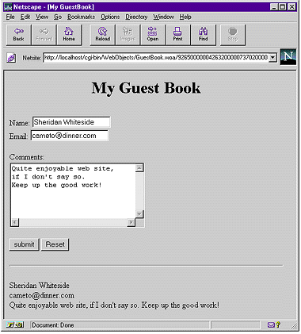

| PATH |

This chapter introduces you to the basic concepts and procedures of developing WebObjects applications. You'll develop, in stages, a simple application for the World Wide Web. The application you'll write is called GuestBook.
When you've finished the steps in this chapter, your application will have a single web page containing a form that allows users to enter their names, e-mail addresses, and comments. When the form is submitted, the application redraws the page with the user's information at the bottom.

In "Enhancing Your Application", you will add features to the application, including a second page, a table that displays information from multiple users, and hyperlinks.
This application illustrates the basic techniques you use to create a WebObjects application. You'll use two primary tools, Project Builder and WebObjects Builder.
Project Builder is an integrated software-development application. It contains a project browser, a code editor, build and debugging support, and many other features needed to develop an application. In this tutorial, you'll learn to use Project Builder to:
WebObjects Builder is an application that provides graphical tools for creating dynamic web pages (components). A web page consists of elements. WebObjects Builder allows you to add most of the common HTML elements to a component by using its graphical editing tools. In addition, WebObjects allows you to create dynamic elements, whose look and behavior are determined at runtime. You'll learn to use WebObjects Builder to:
© 2001 Apple Computer, Inc.